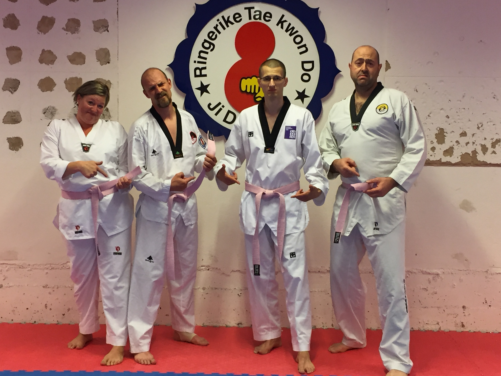

Innlegg
Glemt belte? Rosa belte!

Klubben har fra 15.8.2017 innført Rosa belte for medlemmer med gult belte eller høyere på ungdom og voksen gruppen som møter på trening og har gjort en av følgende TKD synder.
1. Glemt belte.
2. Ikke ha klubbmerke på drakten
3. Ikke ha TTU merke på drakten.
4. Glemt drakt.
Disse reglene gjelder ikke for spesielle drakter hvor det etter avtale med instruktørene ikke skal bæres merker. Dette er for eksempel konkurranse drakt eller lignende.